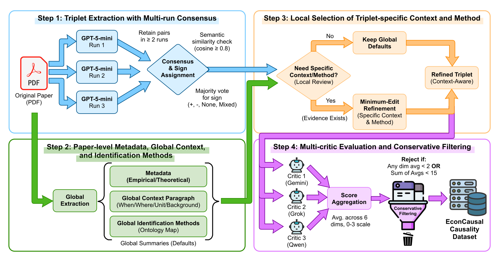

Time 1Market APolicy A
Causal sign−Preprint · Submitted to EMNLP 2026
EconCausal
Does an LLM change its causal answer when the economic context changes?
KAIST · Data Science for Humanity Group, MPI-SP · HKUST
- 10,490
- causal triplets
- 2,595
- empirical studies
- 18
- evaluated models
Same causal question
Minimum wage→Employment
Context changes→
Time 2Market BPolicy B
Causal sign+All-model accuracy
Four tests. One view.
Models are grouped by family. Within every model: T1 Econ, T1 Finance, T2, then T3.
T1 Econ
T1 Finance
T2
T3
Swipe families · select a model for details
Loading all-model benchmark…
Loading families…
How it was built
From papers to grounded tests.
A four-stage extraction pipeline with agreement, context refinement, and independent quality checks.

Three escalating tests
Know the sign. Then question it.
Four labels throughout: +, −, none, or mixed.
Fixed context
Read one study setting and identify its causal sign.
1,807instancesContext shift
Move to a matched study and decide whether the sign travels.
284pairsMisleading cue
Ignore a deliberately wrong source sign and judge the target.
852stress testsContext transfer
A 32-point context penalty.
When the target disagrees with the source sign, accuracy drops sharply.
Overall 73.9Sign-switch 41.3
−32.6 ppOverall 65.4Sign-switch 31.8
−33.6 ppSign errors
Null and mixed effects are missed.
Mean accuracy across tasks, separated by the true effect sign.
Accuracy by effect sign
Positive · Negative · None · Mixed
None13.8
Mixed22.8
Use EconCausal
Reason about the setting, not just the sign.
Cite EconCausal
@misc{lee2026econcausalcontextawareeconomicreasoning,
title={EconCausal: A Context-Aware Economic Reasoning Benchmark for Large Language Models},
author={Lee, Donggyu and Yun, Hyeok and Cha, Meeyoung and Park, Sungwon and Park, Sangyoon and Kim, Jihee},
year={2026}, eprint={2510.07231}, archivePrefix={arXiv}, primaryClass={cs.CL},
url={https://arxiv.org/abs/2510.07231}
}
Research benchmark only. Verify against the cited empirical studies before any high-stakes policy, financial, legal, medical, or investment use.